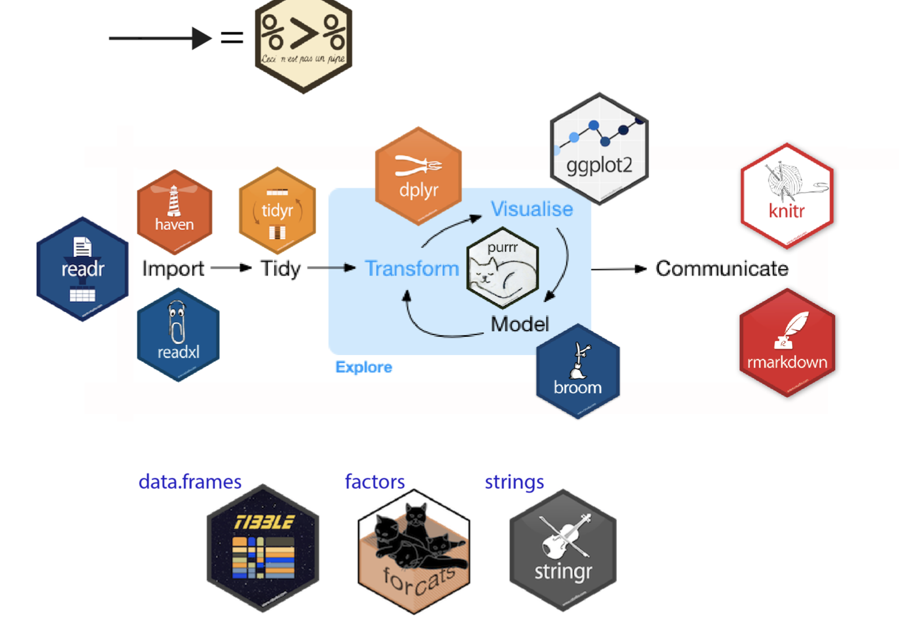
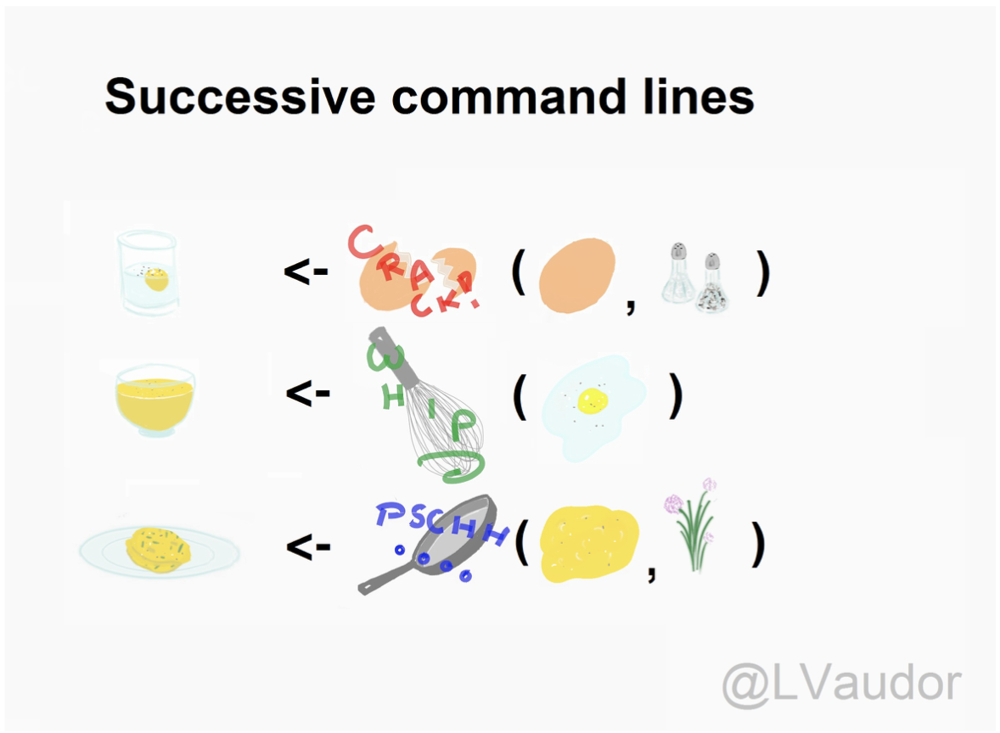
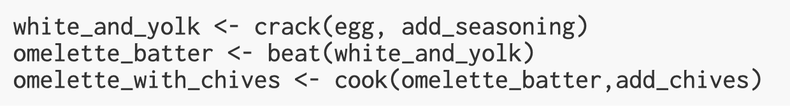
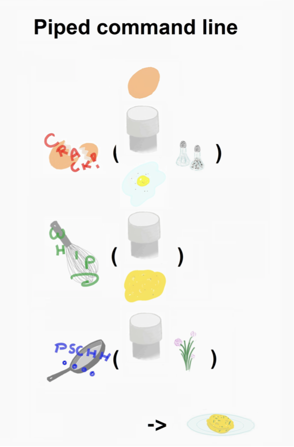
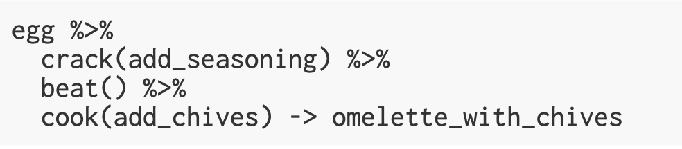

Manipulating data
Data comes in lots of different formats. As we´ve discussed before, one of the most common formats is that of a two-dimensional table (the two dimensions being rows and columns). Usually, each row stands for a separate observation (e.g. a subject), and each column stands for a different variable (e.g. a response, category, or group). A key benefit of tabular data is that it allows you to store different types of data-numerical measurements, alphanumeric labels, categorical descriptors - all in one place.
We (or is that just me?) actually spend far more time cleaning and preparing data than I spend actually analyzing it. This means completing tasks such as cleaning up bad values, changing the structure of tables, merging information stored in separate tables, reducing the data down to a subset of observations, and producing data summaries. Some have estimated that up to 80% of time spent on data analysis involves such data preparation tasks (Dasu & Johnson, 2003)!
In the (dark dark) past, the only option for data cleaning was the painstaking and time-consuming cutting and pasting of data within a spreadsheet program like Excel. We have witnessed students and colleagues waste days, weeks, and even months manually transforming their data in Excel, cutting, copying, and pasting data. Fixing up your data by hand is not only a terrible use of your time (ok, it is), but it is error-prone and not reproducible. Additionally, in this age where we can easily collect massive datasets online, you will not be able to organize, clean, and prepare these by hand.
In short, you will not thrive if you do not learn some key data wrangling skills. Although every dataset presents unique challenges, there are some systematic principles you should follow that will make your analyses easier, less error-prone, more efficient, and more reproducible.
We will thus explore how data science skills will allow you to efficiently get answers to nearly any question you might want to ask about your data.
Tidyverse (https://www.tidyverse.org/) is a collection of R packages created by world-famous data scientist Hadley Wickham.
Tidyverse contains six core packages: dplyr, tidyr, readr, purrr,
ggplot2, and tibble.When you typed library(tidyverse) into
R, you will have seen that it loads in all of these packages in one go.
Within these six core packages, you should be able to find everything
you need to wrangle and visualize your data.
To to all its magic, the tidyverse proposes a working model / workflow with different packages providing functions for different tasks along the way:

For simplicity and efficiency, we are going to focus on the dplyr package, which contains six important functions:
select() Include or exclude certain variables
(columns)
filter() Include or exclude certain observations
(rows)
mutate() Create new variables (columns)
arrange() Change the order of observations
(rows)
group_by() Organize the observations into
groups
summarise() Derive aggregate variables for groups of
observations
These six functions are known as ’single table verbs’ because they only operate on one table at a time. Although the operations of these functions may seem very simplistic, it’s amazing what you can accomplish when you string them together: Hadley Wickham has claimed that 90% of data analysis can be reduced to the operations described by these six functions.
Again, I don’t expect you to remember everything here - the important thing is that you know where to come and look for help when you need to do particular tasks. Being good at coding really is just being good at knowing what to copy and paste.
To demonstrate the power of the six dplyr verbs, we will
use them to work with the babynames data from the
babynames package. The babynames dataset has historical
information about births of babies in the U.S.
The package babynames contains an object of the same
name that contains all the data about babynames.
head(babynames)
# A tibble: 6 × 5
year sex name n prop
<dbl> <chr> <chr> <int> <dbl>
1 1880 F Mary 7065 0.0724
2 1880 F Anna 2604 0.0267
3 1880 F Emma 2003 0.0205
4 1880 F Elizabeth 1939 0.0199
5 1880 F Minnie 1746 0.0179
6 1880 F Margaret 1578 0.0162Each row in the table represents data about births for a given name and sex in a given year. The variables are:
| variable | type | description |
|---|---|---|
| year | double (numeric) | year of birth |
| sex | character | recorded sex of baby (F = female, M = male) |
| name | character | forename given to baby |
| n | integer | number of babies given that name |
| prop | double (numeric) | proportion of all babies of that sex |
The first row of the table tells us that in the year 1880, there were 7065 baby girls born in the U.S. who were given the name Mary, and this accounted for about 7% of all baby girls.
There are two numeric measurements of name popularity,
prop (the proportion of all babies with each name) is
probably more useful than n (total number of babies with
that name), because it takes into account that different numbers of
babies are born in different years.
If we wanted to create a dataset that only includes certain
variables, we can use the select() function from the
dplyr package. Run the below code to only select the
columns year, sex, name and prop.
select(.data = babynames, # the object you want to select variables from
year, sex, name, prop) # the variables you want to select
If you get an error message when using select that says unused
argument it means that it is trying to use the wrong version of the
select() function. There are two solutions to this, first,
save you work and then restart the R session (click session -restart R)
and then run all your code above again from the start, or replace select
with dplyr::select() which tells R exactly which version of
the select function to use. I’d recommend restarting the session because
this will get you in the habit and it’s a useful thing to try for a
range of problems
Alternatively, you can also tell R which variables you don’t want, in this case, rather than telling R to select year, sex, name and prop, we can simply tell it to drop the column n using the minus sign - before the variable name.
select(.data = babynames, -n)
Note that select() does not change the original tibble,
but makes a new tibble with the specified columns. If you don’t save
this new tibble to an object, it won’t be saved. If you
want to keep this new dataset, create a new object. When you run this
code, you will see your new tibble appear in the environment pane.
new_dat <- select(.data = babynames, -n)
The function arrange() will sort the rows in the table
according to the columns you supply. Try running the following code:
arrange(.data = babynames, # the data you want to sort
name) # the variable you want to sort by
The data are now sorted in ascending alphabetical order by name. The
default is to sort in ascending order. If you want it descending, wrap
the name of the variable in the desc() function. For
instance, to sort by year in descending order, run the following
code:
You can also sort by more than one column. What do you think the following code will do?
We have previously used select() to select certain
variables or columns, however, frequently you will also want to select
only certain observations or rows, for example, only babies born after
1999, or only babies named “Mary”. You do this using the verb
filter(). The filter() function is a bit more
involved than the other verbs, and requires more detailed explanation,
but this is because it is also extremely powerful.
Here is an example of filter, can you guess what it will do?
filter(.data = babynames, year > 2000)
The first part of the code tells the function to use the object
babynames. The second argument,
year > 2000, is what is known as a Boolean
expression: an expression whose evaluation results in a value of
TRUE or FALSE. What filter() does
is include any observations (rows) for which the expression evaluates to
TRUE, and exclude any for which it evaluates to
FALSE. So in effect, behind the scenes,
filter() goes through the entire set of 1.8 million
observations, row by row, checking the value of year for each row,
keeping it if the value is greater than 2000, and rejecting it
if it is less than 2000. To see how a boolean expression works, consider
the code below:
years <- 1996:2005
years
[1] 1996 1997 1998 1999 2000 2001 2002 2003 2004 2005years > 2000
[1] FALSE FALSE FALSE FALSE FALSE TRUE TRUE TRUE TRUE TRUEYou can see that the expression years > 2000 returns
a logical vector (a vector of TRUE and
FALSE values), where each element represents whether the
expression is true or false for that element. For the first five
elements (1996 to 2000) it is false, and for the last five elements
(2001 to 2005) it is true.
Here are the most commonly used Boolean expressions.
| Operator | Name | is TRUE if and only if |
|---|---|---|
| A < B | less than | A is less than B |
| A <= B | less than or equal | A is less than or equal to B |
| A > B | greater than | A is greater than B |
| A >= B | greater than or equal | A is greater than or equal to B |
| A == B | equivalence | A exactly equals B |
| A != B | not equal | A does not exactly equal B |
| A %in% B | in | A is an element of vector B |
If you want only those observations for a specific name (e.g., Mary),
you use the equivalence operator ==. Note that you
use double equal signs, not a single equal sign.
filter(babynames, name == "Mary")
If you wanted all the names except Mary, you use the ‘not equals’ operator:
filter(babynames, name!="Mary")
And if you wanted names from a defined set - e.g., names of British
queens - you can use %in%:
This gives you data for the names in the vector on the right hand
side of %in%. You can always invert an expression to get
its opposite. So, for instance, if you instead wanted to get rid of all
Marys, Elizabeths, and Victorias you would use the following:
You can include as many expressions as you like as additional
arguments to filter() and it will only pull out the rows
for which all of the expressions for that row evaluate to
TRUE. For instance,
filter(babynames, year > 2000, prop > .01)
will pull out only those observations beyond the year 2000
that represent greater than 1% of the names for a given sex;
any observation where either expression is false will be excluded. This
ability to string together criteria makes filter() a very
powerful member of the Wickham Six.
Remember that this section exists. It will contain a lot of the answers to problems you face when wrangling data!
Sometimes we need to create a new variable that doesn’t exist in our
dataset. For instance, we might want to figure out what decade a
particular year belongs to. To create new variables, we use the function
mutate(). Note that if you want to save this new column,
you need to save it to an object. Here, you are mutating a
new column and attaching it to the new_dat object you
created before.
new_dat <- mutate(.data = babynames, # the tibble you want to add a column to
decade = floor(year/10) *10) # new column name = what you want it to contain
head(new_dat)
# A tibble: 6 × 6
year sex name n prop decade
<dbl> <chr> <chr> <int> <dbl> <dbl>
1 1880 F Mary 7065 0.0724 1880
2 1880 F Anna 2604 0.0267 1880
3 1880 F Emma 2003 0.0205 1880
4 1880 F Elizabeth 1939 0.0199 1880
5 1880 F Minnie 1746 0.0179 1880
6 1880 F Margaret 1578 0.0162 1880In this case, you are creating a new column decade which has the
decade each year appears in. This is calculated using the command
decade = floor(year/10)*10.
Most quantitative analyses will require you to summarize your data
somehow, for example, by calculating the mean,
median or a sum total of your data. You can
perform all of these operations using the function
summarise().
First, let’s use a new object dat that just has the data
for the four girls names, Alexandra, Beverly, Emily, and Kathleen. To
start off, we’re simply going to calculate the total number of
babies across all years that were given one of these four
names.
It’s useful to get in the habit of translating your code into full
sentences to make it easier to figure out what’s happening. You can read
the below code as “run the function summarise using the
data in the object dat to create a new variable named
total that is the result of adding up all the numbers in the column
n”.
# A tibble: 1 × 1
total
<int>
1 2170302summarise() becomes even more powerful when combined
with the final dplyr function, group_by(). Quite often, you
will want to produce your summary statistics broken down by groups, for
examples, the scores of participants in different conditions, or the
reading time for native and non-native speakers.
There are two ways you can use group_by(). First, you
can create a new, grouped object.
group_dat <- group_by(.data = dat, # the data you want to group
name) # the variable you want to group by
If you look at this object in the viewer, it won’t look any different
to the original dat, however, the underlying structure has
changed. Let’s run the above summarise code again, but now
using the grouped data.
# A tibble: 4 × 2
name total
<chr> <int>
1 Alexandra 232223
2 Beverly 381547
3 Emily 843235
4 Kathleen 713297summarise() has performed exactly the same operation as
before - adding up the total number in the column n - but
this time it has done is separately for each group, which in
this case was the variable name.
You can request multiple summary calculations to be performed in the
same function. For example, the following code calculates the
mean and median number of babies given each
name every year.
# A tibble: 4 × 3
name mean_year median_year
<chr> <dbl> <dbl>
1 Alexandra 1451. 65
2 Beverly 1688. 102.
3 Emily 3978. 986.
4 Kathleen 3397. 436 You can also add multiple grouping variables. For example,
the following code groups new_dat by sex and
decade and then calculates the summary statistics to give
us the mean and median number of male and
female babies in each decade.
group_new_dat <- group_by(new_dat, sex, decade)
summarise(group_new_dat,
mean_year = mean(n),
median_year = median(n))
# A tibble: 28 × 4
# Groups: sex [2]
sex decade mean_year median_year
<chr> <dbl> <dbl> <dbl>
1 F 1880 111. 13
2 F 1890 128. 13
3 F 1900 131. 12
4 F 1910 187. 12
5 F 1920 211. 12
6 F 1930 214. 12
7 F 1940 262. 12
8 F 1950 288. 13
9 F 1960 235. 12
10 F 1970 147. 11
# … with 18 more rowssummarise() has grouped output by ‘sex’. You can
override using the .groups argument.
If you get what looks like an error that says summarise() ungrouping
output (override with .groups argument) don’t worry, this
isn’t an error it’s just R telling you what it’s done.
The final activity for this chapter essentially repeats what we’ve
already covered but in a slightly different way. In the previous
activities, you created new objects with new variables or groupings and
then you called summarise() on those new objects in
separate lines of code. As a result, you had multiple objects in your
environment pane and you need to make sure that you keep track of the
different names. No fun, I promise.
Instead, you can use pipes. Pipes are written as
%>% and they should be read as “and then”. Pipes allow
you to string together ‘sentences’ of code into ‘paragraphs’ so that you
don’t need to create intermediary objects. Again, it is easier
to show than tell.
I´ll first try visually, and then via code.
  ### Love-pipe-approach  
Not only do I really like these visuals, but I think they do a very good job of depicting how the process and its logic change.
Now, the below code does exactly the same as all the code we wrote above but it only creates one object.
The reason that this function is called a pipe is because it ‘pipes’ the data through to the next function. When you wrote the code previously, the first argument of each function was the dataset you wanted to work on. When you use pipes it will automatically take the data from the previous line of code so you don’t need to specify it again.
Some people find pipes a bit tricky to understand from a conceptual point of view, however, it’s well worth learning to use them as when your code starts getting longer they are much more efficient and mean you have to write less code which is always a good thing!
For this short demo and to introduce a new function, we are going to be using a real dataset. Click the below link to see some additional info.
Now we can read in the data. To do this we will use the function
read_csv().
First, we will create an object called dat that contains
the data in the ahi-cesd.csv file. Then, we will create an
object called info that contains the data in the
participant-info.csv.
Keep in mind: There is also a function called
read.csv(). Be very careful NOT to use this function
instead of read_csv() as they have different ways of naming
columns.
You should now see that the objects dat and
pinfo have appeared in the environment pane. Whenever you
read data into R you should always do an initial check to see that your
data looks like you expected. There are several ways you can do this,
try them all out to see how the results differ.
In the environment pane, click on dat and
pinfo. This will open the data to give you a
spreadsheet-like view (although you can’t edit it like in Excel) In the
environment pane, click the small blue play button to the left of
dat and pinfo. This will show you the
structure of the object information including the names of all the
variables in that object and what type they are (also see
str(pinfo)).
Use summary(pinfo)
Use head(pinfo)
Just type the name of the object you want to view, e.g.,
dat.
We have two files, dat and info but what we really want
is a single file that has both the data and the demographic
information about the participants. R makes this very easy by using
the function inner_join().
Remember to use the help function ?inner_join if you
want more information about how to use a function and to use tab
auto-complete to help you write your code.
The below code will create a new object all_dat that has
the data from both dat and pinfo and it will
use the columns id and intervention to match
the participants’ data. If you want to join tables that have multiple
columns in common, you need to use c() to list them all (I
think of it as c for combine, or collection).
all_dat <- inner_join(x = dat, # the first table you want to join
y = pinfo, # the second table you want to join
by = c("id", "intervention")) # columns the two tables have in common
Our final step is to pull our variables of interest. Very frequently, datasets will have more variables and data than you actually want to use and it can make life easier to create a new object with just the data you need.
In this case, the file contains the responses to each individual question on both the AHI scale and the CESD scale as well as the total score (i.e., the sum of all the individual responses). For our analysis, all we care about is the total scores, as well as the demographic information about participants.
To do this we use the select() function to create a new
object named summarydata.
summarydata <- select(.data = all_dat, # name of the object to take data from
ahiTotal, cesdTotal, sex, age, educ, income, occasion,elapsed.days)
If you get an error message when using select that says
unused argument it means that it is trying to use the wrong
version of the select function. There are two solutions to
this, first, save you work and then restart the R session (click session
-restart R) and then run all your code above again from the
start, or replace select with dplyr::select which tells R
exactly which version of the select function to use. We’d
recommend restarting the session because this will get you in the habit
and it’s a useful thing to try for a range of problems